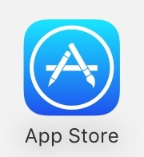

检查ios版本更新至10.1.1及以上：（步骤：设置－通用－关于本机），如下图：
2. 打开苹果AppStore

3. 点击精品推荐页面底部的“绑定支付宝”或“绑定微信支付”
4. 选择您常用的支付账户，可填写支付宝账户或授权微信支付完成账号绑定
5. 返回“咨聊”APP，在“我”页面点击“充值”
6. 点击“充值”，选择要充值的金额
7. 按照系统提示，输入AppleID等信息
8. 充值完成后就可以去购买感兴趣的内容啦～
注：如果您已扣款，但充值聊币未成功，可能是充值到了App Store余额中（验证方法：打开App Store，滑到最下方查看余额）。
此时您仅需再次在咨聊中充值相应的金额，即可充值聊币成功。